Workshop Manual ➭ BODY & ACCESSORIES ➭ EXTERIOR TRIM ➭ DECK PANEL MANUAL OPEN/CLOSE PROCEDURE
DECK PANEL MANUAL OPEN/CLOSE PROCEDURE
id091600812000
• Because the pinion gear (deck panel motor) and sector gear are disengaged when the manual open/close procedure is performed, the deck panel does not operate electrically after a repair. It is necessary to perform the recovery procedure to engage the pinion gear (deck panel motor) and sector gear.(See Recovery Procedure.)
Deck Panel Manual Open/Close Procedure And Temporary Measure Procedure
• The temporary measure is for releasing the lock using a rope if the deck panel needs to be opened/closed again or to drive the vehicle after the deck panel manual open/close procedure has been performed. To open/close the deck panel manually on the vehicle where the temporary measure has already been performed, open/close the deck panel manually referring to "Deck panel manual open/close procedure after temporary measure".(See Close the deck panel (Temporary measure).)
• To perform the following procedure, use the tools that comes with the vehicle.
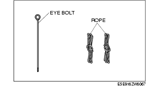
• To free the deck panel, both the motors need to be unlocked. • The following procedure is only for the left side. Perform the same procedure on the right side to free the deck panel.
Open the deck panel
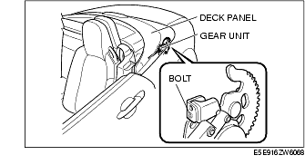
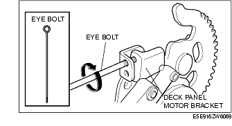
• When the deck panel motor bracket is pressed, the deck panel motor bracket rotates, and the pinion gear (deck panel motor) and sector gear are disengaged.
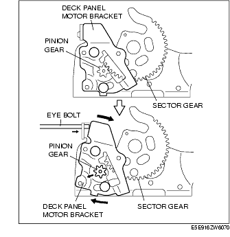
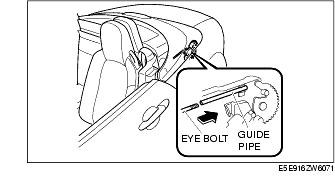
- Press the eye bolt towards the vehicle rear and disengage the sector gear and the lock pin of the deck panel base link.
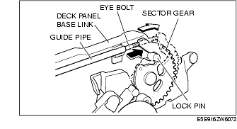
- Lift up the deck panel from the both the left and right sides of the vehicle, one person on each side, to open the deck panel.
Close the deck panel (Temporary measure)
• If the deck panel needs to be opened/closed again or to drive the vehicle, perform the following temporary measure procedure.
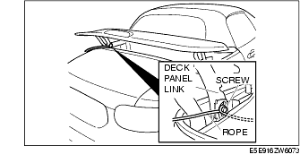
• Tie the rope securely around the knob so that it does not loosen.
- Route the rope on the vehicle's front side to the inside of the vehicle, passing it through the gap in the side shelf.
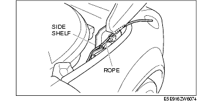
- Route the rope on the vehicle's rear side to the outside of the vehicle, passing it between the deck panel links.
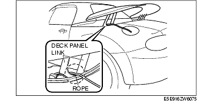
-
After doing the same procedure on the right side, close the deck panel from both the left and sides of the vehicle, one person on each side.
-
Pull the rope on the vehicle's rear (rope is outside of vehicle) along the trunk lid to engage and lock the sector gear and the lock pin of the deck panel base link.
- Double tie the rope on the vehicle's rear side (rope is outside of vehicle) to the trunk lid hinge as shown in the figure.
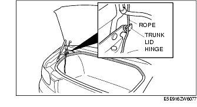
• Tie the rope on the trunk lid hinge to prevent the lock from releasing while driving. Tie the rope securely on the trunk lid hinge so that it does not loosen.
Deck Panel Manual Open/Close Procedure After Temporarily Measure
• The temporary measure is for releasing the lock using a rope if the deck panel needs to be opened/closed again or to drive the vehicle after the deck panel manual open/close procedure has been performed. To open/close the deck panel manually on a vehicle where the temporary measure has already been performed, perform the following procedure and open/close the deck panel manually.
Open the deck panel
-
Pull the rope on the vehicle's front (rope is inside of vehicle) to disengage the sector gear and the lock pin of the deck panel base link.
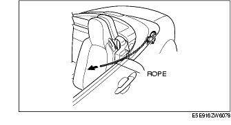
- Lift up the deck panel from the both the left and right sides of the vehicle, one person on each side, to open the deck panel.
Close the deck panel
• If the deck panel needs to be opened/closed again or to drive the vehicle, perform the following procedure to close the deck panel.
-
Close the deck panel from both the left and right sides of the vehicle, one person on each side.
-
Pull the rope on the vehicle's rear (rope is outside of vehicle) along the trunk lid to engage and lock the sector gear and the lock pin of the deck panel base link.
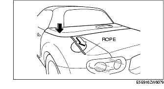
- Double tie the rope on the vehicle's rear side (rope is outside of vehicle) to the trunk lid hinge as shown in the figure.

• Tie the rope on the trunk lid hinge to prevent the lock from releasing while driving. Tie the rope securely on the trunk lid hinge so that it does not loosen.
Recovery Procedure
-
Rotate the deck panel motor bracket in the direction of the arrow to engage the pinion gear (deck panel motor) and the sector gear.
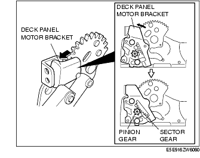
• If the temporary measure is performed, remove the ropes.
Deck Panel Manual Open/Close Procedure With The Roof Panel Fully Closed
-
Disconnect the negative battery cable. (See BATTERY REMOVAL/INSTALLATION [L8, LF].)
-
Remove the aeroboard. (See AEROBOARD REMOVAL/INSTALLATION.)
-
Peering from the space where the wind blocker was removed, remove both sides of the nuts shown in the figure.
• The number of shims varies depending on the location of the deck panel installation nuts. Adjustment will be easier by verifying the number of shims to be used before removing the deck panel.
-
Disconnect the high-mount brake light connector on the left side by pulling it in the direction of (2) while pressing it in the direction of (1).
Nut Removal Note
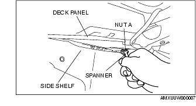
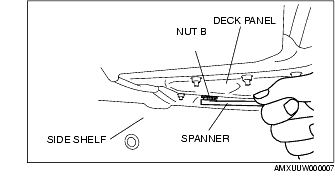
Deck Panel Recovery Procedure
-
Install the deck panel. (See DECK PANEL REMOVAL/INSTALLATION.)
-
Verify the deck panel clearance. (See POWER RETRACTABLE HARDTOP ADJUSTMENT.)